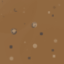

Hello World Maker Suite
TO THE GAME!
Load A Map
Enter map name (at least 4 characters, use underlines instead of spaces):
Save Map
PREV
Dirt (001)

NEXT
X
X
Y
Y
PAN DOWN
PAN UP
PAN LEFT
PAN RIGHT
ZOOM IN
ZOOM OUT
Single Block
Thin Cross
Fat Cross
BEDROCK LAYER OPTIONS:
Top (block type)
Bottom (bl. type)
Height (# rows)
ADD BEDROCK